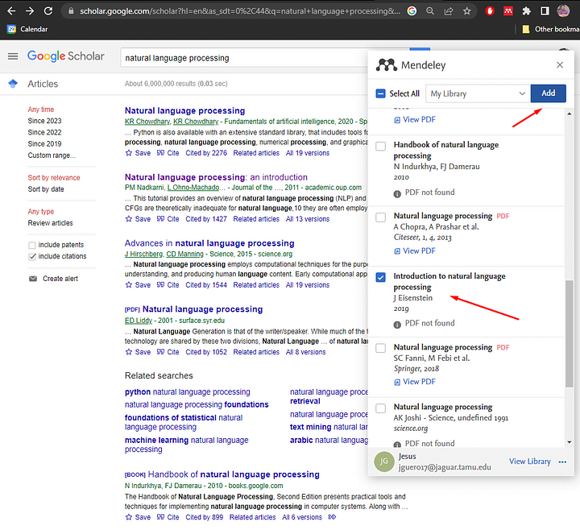
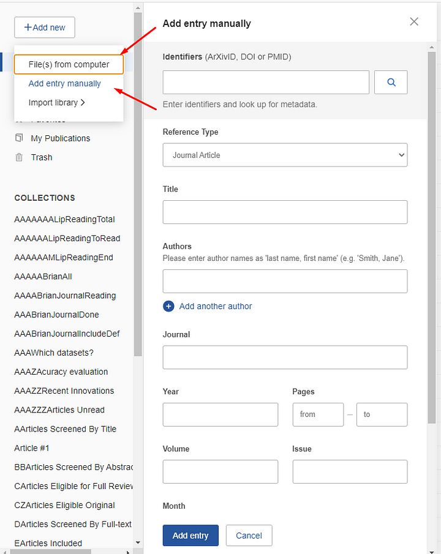
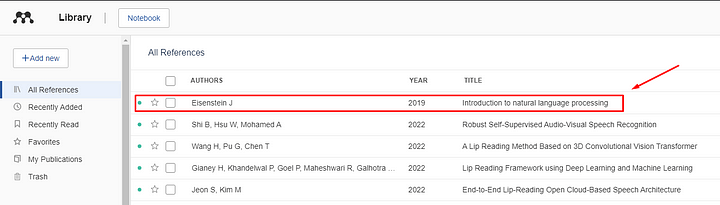
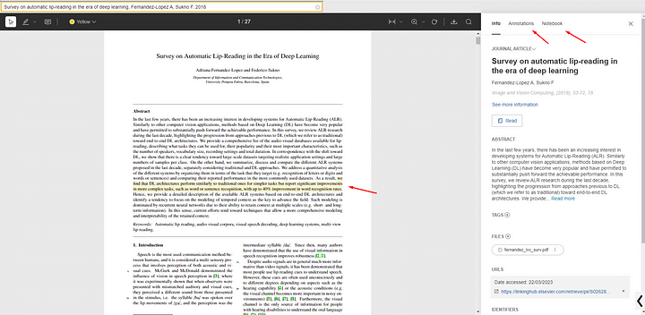
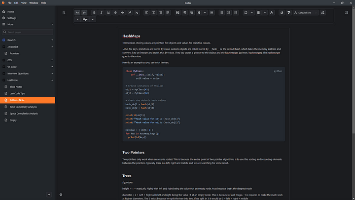

In Computer Science there are a few fields whereby reading academic papers is a requirement for understanding the field enough to reach the tippity top of the cutting edge science. Granted, you can get really really skilled in these fields just implementing code, taking math courses and studying topics in fashionable order. But, to reach the very edge of these topics, you need to learn to read, digest & organize research papers online. This is unlike web development, where you do not really need academic research.
You Don't Need a College Degree
And no, you do not need a college degree to read or publish research papers, especially in Computer Science. Yes, peer reviewers are more discriminatory to non-academic authors, but that should spur you to create a higher quality paper and not give up entirely. Additionally, it is true many publishers will accept work just because you are in college. Just know you are equally deserving to publish and read research papers as anyone else. It is just the system we live in and have to deal with.
Finding Papers
Point is, read, and, if you want, publish papers, even if you do not have a college degree. There are many resources for finding papers:
- Google Scholar: scholar.google.com - comprehensive academic search engine
- arXiv: arxiv.org - preprints in computer science and other fields
- DBLP: dblp.uni-trier.de - Computer Science bibliography
- Papers With Code: paperswithcode.com - papers with implementations
- ResearchGate: Often authors will share their papers directly
How to Read a Paper
Reading a research paper is different from reading a textbook or blog post. You can't just read it linearly from start to finish. Here's the proper approach:
First Pass: The Overview
Read the abstract, introduction, and conclusion first. This gives you the big picture. Do you want to continue? If the paper seems relevant, proceed.
Second Pass: Key Sections
Now read the sections that matter most to you. You don't need to read every section. Skip the parts that aren't relevant. Focus on methodology and results.
Third Pass: Deep Dive
If you want to really understand the paper, do a third pass. This time read more carefully. Take notes. Try to understand the mathematics and proofs. Implement their ideas if needed.
 Taking Notes
Taking good notes is critical. You won't remember a paper you read 6 months ago if you don't have notes. Here's what I recommend noting:
- Main contribution: What is new about this paper?
- Key concepts: What are the important ideas?
- Methodology: How did they achieve their results?
- Results: What were the concrete improvements/findings?
- Limitations: What could be improved?
- Related work: How does this relate to other papers?
Organizing Your Papers
As you read more papers, organize them. Use a citation manager like Zotero or Mendeley. Create categories or tags. Build a personal knowledge base. This becomes invaluable as you accumulate more papers.
Making Progress
Don't try to understand every paper you read at 100%. Some papers you'll skim, some you'll understand deeply. That's okay. The goal is to expand your knowledge and stay current with the cutting edge.
Start Reading Today
Find a topic you're interested in. Search for papers on that topic. Read the abstract. If it interests you, do the three-pass method. Take notes. Build your knowledge incrementally. Before you know it, you'll be reading papers like a pro and understanding cutting edge research.